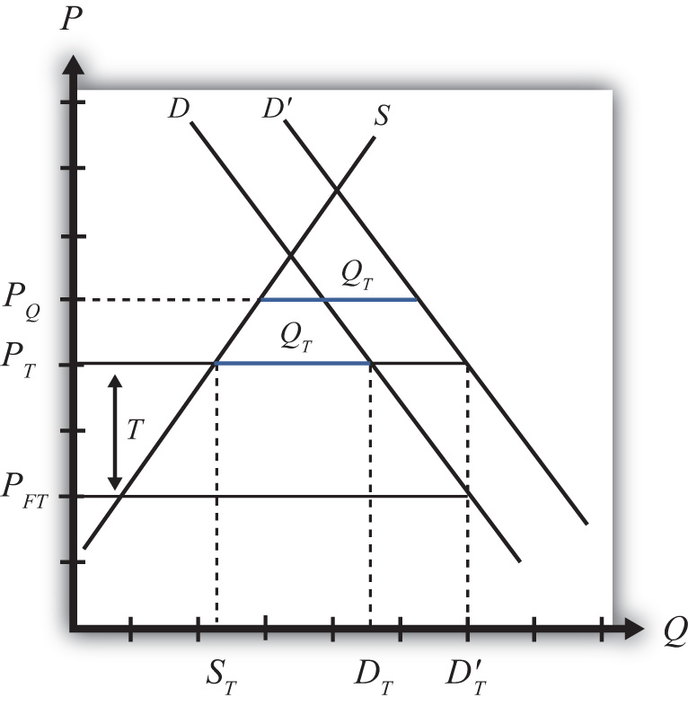
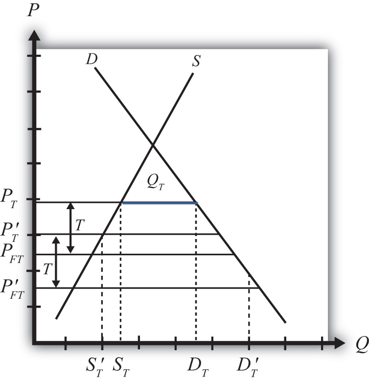

There are two basic ways to provide protection to domestic import-competing industries: a tariff or a quota. The choice between one or the other is likely to depend on several concerns.
One concern is the revenue effects. A tariff has an immediate advantage for governments in that it will automatically generate tariff revenue (assuming the tariff is not prohibitive). Quotas may or may not generate revenue depending on how the quota is administered. If a quota is administered by selling quota tickets (i.e., import rights), then a quota will generate government revenue; however, if the quota is administered on a first-come, first-served basis or if quota tickets are given away, then no revenue is collected.
Administrative costs of tariffs and quotas are also likely to differ. Tariff collection involves product identification, collection, and processing of fees. Quota administration will also involve product identification and some method of keeping track of, or counting, the product as it enters the country in multiple ports of entry. It may also involve some method of auctioning or disbursing quota tickets. It is not obvious which of these two procedures would be less costly, although a good guess would be tariff collection.
Perhaps the most important distinction between the two policies, however, is the protective effect the policy has on the import-competing industries. In one sense, quotas are more protective of the domestic industry because they limit the extent of import competition to a fixed maximum quantity. The quota provides an upper bound to the foreign competition the domestic industries will face. In contrast, tariffs simply raise the price but do not limit the degree of competition or trade volume to any particular level.
In the original General Agreement on Tariffs and Trade (GATT), a preference for the application of tariffs rather than quotas was introduced as a guiding principle. One reason was the sense that tariffs allowed for more market flexibility and thus could be expected to be less protective over time. Another reason concerned transparency. With a quota in place, it is very difficult to discern the degree to which a market is protected since it can be difficult to measure how far the quota is below the free trade import level. With a tariff in place, especially an ad valorem tariff, one can use the tariff percentage as a measure of the degree of protection.
Also, it was considered somewhat easier to negotiate reductions in tariff rates than quota increases during GATT rounds of trade liberalization. Again, the issue of transparency arises. Trade liberalization agreements generally target a fixed percentage for tariff reductions. For example, countries might agree to reduce average tariffs by 30 percent from their current levels. This rule would be perceived as being equal reciprocation in that each country would be liberalizing to the same degree. Hence the agreement could be judged to be fair. However, with quotas in place, it would be difficult, if not impossible, to apply such a straightforward type of fairness principle.
For this reason, current World Trade Organization (WTO) member countries agreed in the Uruguay Round to phase out the use of quotas, used primarily in agriculture industries. Instead, countries will apply tariffs that are equivalent in their market effects to the original quotas. This adjustment is referred to as tariffication. In this way, future rounds of trade liberalization negotiations will be able to use fair reciprocal concessions to bring these tariffs down further.
One of the main concerns in choosing between tariffs or quotas is the protective effect of the policy. Although tariffs and quotas are generally equivalent to each other in terms of their static price and welfare effects, this equivalence does not remain true in the face of market changes. In the next sections we consider three such market changes: an increase in domestic demand, an increase in domestic supply, and a decrease in the world price. In each case, we compare the protective effects of a tariff and a quota for the domestic import-competing industries.
Consider Figure 7.28 "Effects of a Demand Increase", which depicts a small importing country. PFT is the free trade price. If a tariff of T is put into place, the domestic price rises to PT and imports equal DT − ST. A quota set equal to QT (the blue line segment) would generate the same increase in price to PT and the same level of imports. Thus the tariff T and quota QT are said to be equivalent to each other.
Figure 7.28 Effects of a Demand Increase
Next, consider the effects in this market when there is an increase in domestic demand, represented by a rightward shift of the demand curve. A demand increase could arise because of rising incomes in the country or because consumers’ preferences become more favorable to this product.
With a tariff in place initially, the increase in domestic demand will leave the domestic price unaffected. Because this is a small country, the world price does not change and thus the domestic tariff-inclusive price remains at PT = PFT + T. Domestic supply also remains at ST, but demand rises to D′T, causing an increase in imports to D′T − ST.
With a quota in place initially, the increase in domestic demand causes the domestic price to rise to PQ in order to maintain the import level at QT (the higher blue line segment). Domestic supply will rise with the increase in price (not labeled), while domestic demand will fall.
The protective effect of the tariff or quota means the degree to which the domestic producers are protected in the face of the market change. Since the domestic price rises more with the quota in place than with the tariff, domestic producers will enjoy a larger supply and consequently a higher level of producer surplus (not shown). Thus the quota is more protective than a tariff in the face of an increase in domestic demand.
Again, consider a small importing country. In Figure 7.29 "Effects of a Supply Increase", PFT is the free trade price. If a tariff of T is put into place, the domestic price rises to PT and imports equal DT − ST. A quota set equal to QT (the blue line segment) would generate the same increase in price to PT and the same level of imports. Thus the tariff T and quota QT are said to be equivalent to each other.
Figure 7.29 Effects of a Supply Increase

Next, consider the effects in this market when there is an increase in domestic supply, represented by a rightward shift of the supply curve. A supply increase could arise because of falling production costs or due to improvements in productivity.
With a tariff in place initially, the increase in domestic supply will leave the domestic price unaffected. Because this is a small country, the world price does not change and thus the domestic tariff-inclusive price remains at PT = PFT + T. However, because domestic supply is now higher at every price, at the price PT, supply equals domestic demand of DT. This means that with the tariff, imports are reduced to zero.
With a quota in place initially, the increase in domestic supply causes the domestic price to fall back to the free trade level in order to maintain the import level at the level QT (the lower blue line segment). Domestic supply will rise to S′Q with the decrease in price, while domestic demand also will rise to D′Q.
Since the domestic price rises more with the tariff in place than with the quota, domestic producers will enjoy a larger supply (DT vs. S′Q) and consequently a higher level of producer surplus (not shown). Thus the tariff is more protective than a quota in the face of an increase in domestic supply.
Again, consider a small importing country. In Figure 7.30 "Effects of a World Price Decrease", PFT is the free trade price. If a tariff of T is put into place, the domestic price rises to PT and imports equal DT − ST. A quota set equal to QT (the blue line segment) would generate the same increase in price to PT and the same level of imports. Thus the tariff T and quota QT are said to be equivalent to each other.
Figure 7.30 Effects of a World Price Decrease
Next, consider the effects in this market when there is a decrease in the world free trade price, represented by a downward shift from PFT to P′FT. The world price could fall because of falling world production costs or due to improvements in foreign productivity.
With a tariff in place initially, the decrease in the world price will cause a reduction in the domestic price. Because this is a small country, when the world price falls, the domestic tariff-inclusive price also falls to P′T = P′FT + T. With the lower price, domestic supply falls to S′T, while domestic demand rises to D′T. This means that with the tariff in place, imports rise to D′T − S′T.
With a quota in place initially, the decrease in the world free trade price has no effect on the domestic price. The domestic price remains at PT since this is the only price that will support the quota QT.
Since the domestic price is higher with the quota in place than with the tariff, domestic producers will enjoy a larger supply (ST vs. S′T) and consequently a higher level of producer surplus (not shown). Thus the quota is more protective than a tariff in the face of a decrease in the world free trade price.
What we can conclude from the three examples above is that when market conditions change such that imports increase, a quota is more protective than a tariff. This will occur if domestic demand increases, domestic supply decreases, the world price falls, or if some combination of these things occur.
In situations where market changes cause a decrease in imports, a tariff is more protective than a quota. This occurs if domestic demand falls, domestic supply rises, the world price rises, or some combination of these changes occurs.
Since protection is often provided due to the insistence of the domestic import-competing industries—rather than a more comprehensive concern for the general welfare of the country—and since import-competing firms are generally more concerned about situations where imports may increase, industry preferences usually favor quotas over tariffs since quotas will be more protective in these situations. Other government concerns, such as revenue needs, ease of administration, or participation in trade agreements like the GATT/WTO, which contain a preference of tariffs over quotas, have resulted in the widespread application of tariffs rather than quotas in most instances.
Draw a diagram depicting a small importing country with a nonprohibitive import tariff (T) in place. On the diagram indicate the tariff rate and the equivalent import quota (Q) that would generate the same domestic price.
Next, suppose there is a decrease in domestic demand for the good.
Draw a diagram depicting a small importing country with a nonprohibitive import tariff (T) in place. On the diagram indicate the tariff rate and the equivalent import quota (Q) that would generate the same domestic price.
Next, suppose there is an increase in the world price of the good.